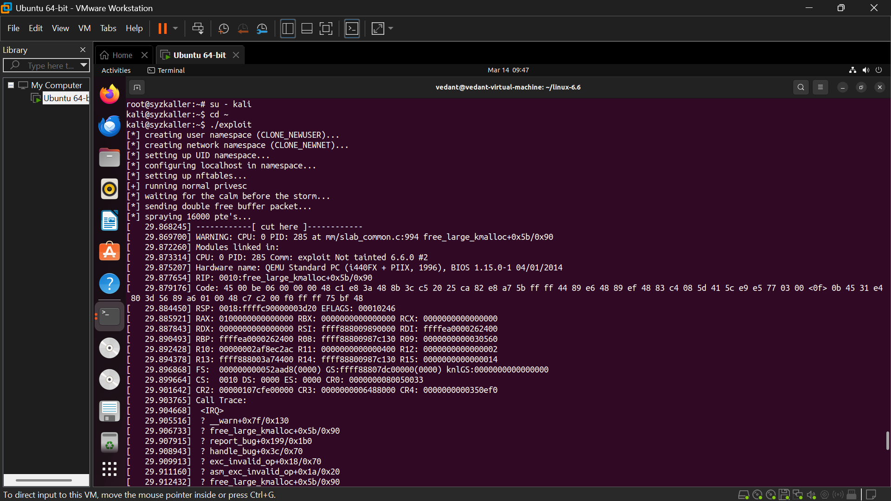

KOOBE-Guard: Active Temporal Mitigation of Kernel Double-Free Vulnerabilities
View Source Code on GitHubThe Linux kernel represents the absolute foundation of system security; any memory corruption at Ring 0 can lead to total system compromise, rendering all user-space security mechanisms completely obsolete[cite: 9]. Modern operating systems utilize the SLUB allocator to manage memory with extreme performance, implicitly trusting that subsystems will perfectly manage their allocations[cite: 9].
However, complex logic errors frequently lead to catastrophic memory mismanagement[cite: 9]. In this project, I engineered KOOBE-Guard—an active Intrusion Prevention System (IPS) implemented as a Loadable Kernel Module (LKM) to dynamically neutralize the severe CVE-2024-1086 double-free vulnerability[cite: 9].
1. The Vulnerability: CVE-2024-1086
This specific vulnerability resides in the nft_verdict_init() function of the Netfilter (nf_tables) subsystem[cite: 9]. Because of an error-handling logic failure, the system accidentally instructs the SLUB allocator to free the exact same piece of memory twice[cite: 9].
Unprivileged users can interact with these network filtering hooks via user namespaces and Netlink sockets[cite: 9]. This allows an attacker to intentionally trigger the double-free, corrupting the fundamental linked-list structure of the kernel's freelist to force overlapping memory allocations[cite: 9]. By overlapping user data with highly privileged Page Table Entries (PTE/PMD), the attacker secures arbitrary memory read/write capabilities, leading to full Local Privilege Escalation (LPE)[cite: 9].
2. Designing the Virtual Laboratory
To safely detonate and study this vulnerability without risking host system integrity, I constructed a deterministic, hardware-accelerated virtual laboratory[cite: 9]. The environment consisted of an Ubuntu Host on VMware Workstation, running a nested QEMU hypervisor[cite: 9].

Figure 1: The nested hypervisor setup utilizing VMware and QEMU.
The guest system ran a custom-compiled Linux 6.6.0 kernel with a Debian "Trixie" root filesystem[cite: 9]. Compiling the kernel introduced significant challenges, as minimal kernel builds strip out necessary subsystems required by standard exploit payloads[cite: 9]. I had to compile massive, unoptimized bzImage files to replicate exact production configurations[cite: 9].

Figure 2: Customizing the kernel configuration to enable vulnerable Netfilter subsystems.
3. Exploitation & Heap Feng Shui
During the initial phase, I successfully weaponized the exploit from an unprivileged kali user account[cite: 9]. The exploit sequence relied heavily on Heap Feng Shui[cite: 9]. By rapidly spraying the heap with 16,000 PTE structures before triggering the bug, I forced a deterministic double-free state directly over sensitive page table entries[cite: 9].

Figure 3: Initiating the heap grooming and Netlink socket exploitation sequence.

Figure 4: Exploitation success. Arbitrary memory read/write achieved, spawning a root shell.
4. The Defense: Active Temporal Gap Tracking
Traditional mitigations are severely flawed for production servers[cite: 9]. KASAN utilizes massive shadow memory mapping, resulting in 200%-300% CPU overhead[cite: 9]. Control Flow Integrity (CFI) is fast but completely blind to data-oriented page table attacks[cite: 9].
I engineered KOOBE-Guard to bridge this gap via Active Temporal Gap Tracking[cite: 9]. The module injects a Kprobe directly into the kfree execution path[cite: 9]. When memory is freed, the module records the exact nanosecond timestamp via ktime_get_ns()[cite: 9]. If a subsequent request to free the exact same address occurs, the module calculates the temporal delta[cite: 9].
Because standard memory recycling takes tens of thousands of nanoseconds, while an exploit's unwinding sequence is virtually instantaneous, KOOBE mathematically filters out false positives[cite: 9]. Through extensive benchmarking, I tuned the temporal threshold to exactly 5,000 nanoseconds (5μs)[cite: 9].
Active Parameter Nullification
Once a malicious temporal signature is detected, KOOBE-Guard actively intervenes[cite: 9]. By rewriting the CPU register mid-flight, it drops the invalid memory request:
// Conceptual representation of the KOOBE-Guard Kprobe intervention
if (temporal_gap < EXPLOIT_THRESHOLD_NS) {
printk(KERN_ALERT "KOOBE: Double-Free Signature Detected! Delta: %llu ns\n", temporal_gap);
// Active Parameter Nullification
// Manually rewrite the CPU's destination index register to NULL mid-flight
regs->di = 0;
// The kernel will now safely execute kfree(NULL), preventing SLUB corruption.
}5. Quantitative Evaluation
To rigorously test the defense, I developed automated testing scripts (hit_rate.sh) to launch the exploit recursively[cite: 9]. KOOBE-Guard achieved a 100% Interception Rate, neutralizing the double-free every single time[cite: 9].
Furthermore, I benchmarked performance using a filesystem traversal stress-test while clearing the page cache (drop_caches)[cite: 9]. The results were staggering when compared to KASAN[cite: 9]:
- Memory Footprint: KOOBE-Guard consumed less than 1MB, sustaining the baseline 57MB total system RAM[cite: 9]. KASAN, in theory, demands a massive 185MB footprint[cite: 9].
- CPU Latency: The baseline execution took 2.01 seconds[cite: 9]. KOOBE-Guard added microscopic overhead, completing in 2.25 seconds, whereas KASAN would stall the system at 6.03 seconds[cite: 9].
6. Future Work: eBPF & Deep-State Sanitization
While KOOBE-Guard brilliantly neutralizes the exploit, it leaves a dangling Use-After-Free (UAF) pointer in the kernel[cite: 9]. When the kernel's garbage collector attempts to tear down the attacker's fake namespace, it hits this dangling pointer, causing a kernel panic[cite: 9].
My future work involves implementing "Deep-State Pointer Sanitization" to actively trace and safely nullify the dangling pointer back to the nft_verdict_init struct before the garbage collector initiates tear-down[cite: 9]. Additionally, porting this temporal tracking logic from standard LKMs into the modern eBPF (Extended Berkeley Packet Filter) architecture will provide an even safer deployment model for production enterprise environments[cite: 9].